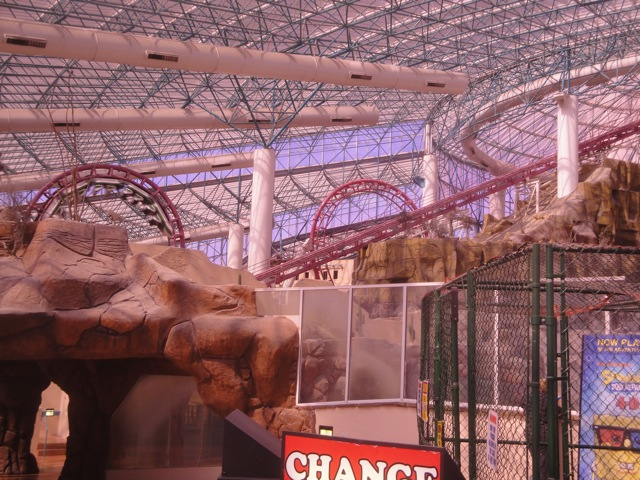

| |
Canyon Blaster Review
We're here at the Adventuredome in the Circus Circus Hotel & Casino. Today's ride we'll be reviewing for you is Canyon Blaster. I know it's technically a custom Arrow Loopscrew since they had to modify it since it's in the Adventuredome, but it just seems like the standard old loopscrew. Though to be fair, it was hauling ass last time I rode it. All right. Let's pull down the OTSRs and ride this thing. We head out the station, down a dip. Through some straight track, wave hello to El Loco. Go around a turn, take a tunnel, and climb up the lifthill. We get a good view of the Adventuredome before we reach the top. We head around a turn, and plummet down the first drop. While it's nothing special or cool, it's pretty fun and even has a nice little pop of airtime. Then we go through Loop #1. Its a fun loop with some really good Positive Gs. Then we go through Loop #2. This is exactly like Loop #1. Hell, last time, I was even starting to grey out a little bit. That is seriously f*cking impressive for a loopscrew. I'm dead serious. We then rise up and head around a turn. No big deal. Looks just like the typical Arrow Corkscrew. WRONG!!! There's actually a good pop of airtime here. It caught me off guard. We then tumble on through a double corkscrew. And I don't mean tumble in a bad way. It's smooth. We just fly through them quickly. The Corkscrews are a lot of fun. After going through those two corkscrews, we rise up a small hill, get a little more airtime, and head into an upward helix inside the mountain from the old Rim Runner ride. TAKE THE MOUNTAIN!!!! We head up, pop out briefly. Dip a little bit, and TAKE THE MOUNTAIN AGAIN!!! We see some pretty flashing lights, before heading straight into the brake run. Canyon Blaster unique in the fact that unlike most loopscrews which range from HORRENDOUS at their absolute worst, to just meh. This is the only one that manages to actually, *gasp* Be a good ride. Now I don't want to hype it up too much since when I first rode it, it was meh. Just your typical standard loopscrew. But my last couple rides on it, THEY WERE JUST SO GOOD!!! I really hope that it continues to run this way, because its actaully a fun ride this way. Hopefully it runs as how I described it in this review.
7/10
Location: Adventuredome
Opened: 1993
Built by: Arrow
Last Ridden: July 14, 2014
Canyon Blaster Photos




|